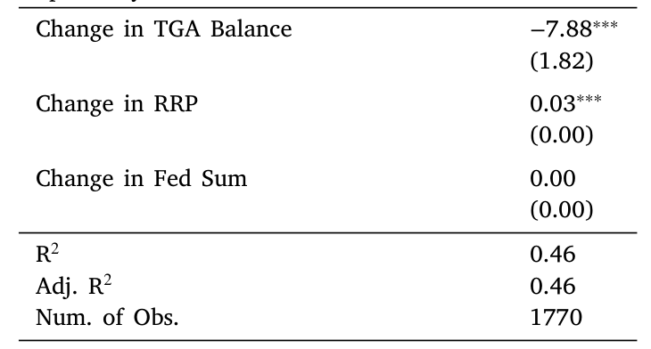
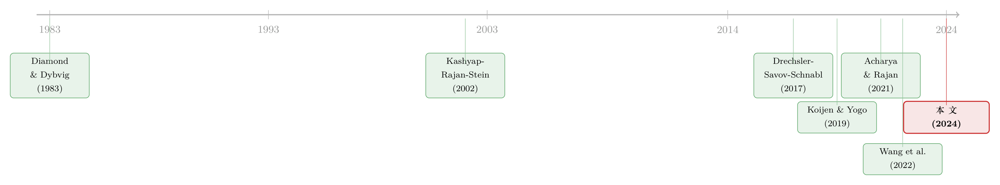

央行印的不是钱，是「占地方」的准备金——QE 如何反手挤掉了银行的贷款
本文读的是 Diamond, Jiang & Ma (2024, Journal of Financial Economics)：量化宽松 (quantitative easing, QE) 向银行体系注入的天量准备金，并没有像直觉所想的那样「润滑」信贷，反而挤出了银行对实体的贷款。他们用一个带横截面工具变量的结构模型估出：QE 注入的准备金把贷款利率抬高了 7.4 个基点，每一美元准备金会让银行少放 7.7 美分的贷款——一年合计减少约 $140 billion 的信贷。
1 一个被忽略的副作用
先看一组数字。美国存款机构的准备金，在 2008Q1 还不到 $50 billion；到 2015 年冲到 $2.8 trillion，2021 年突破了 $3 trillion。这些准备金，是美联储在两次危机——2008–2009 金融危机和 2020 新冠——里通过 QE 一手「印」出来的。
关于 QE，过去十几年的文献几乎都在盯着它的资产购买那一端：美联储买走了多少国债、多少 MBS，把长端收益率压低了多少。这是故事的「买」的一面。但每一笔购买的背后，美联储都得付钱——付的不是现金，而是准备金（reserves），一种只能在银行体系内部持有、且付息的资产。于是 QE 的另一面，是给银行的资产负债表净注入了一大堆流动性资产。
这一面，几乎没人认真算过账。本文要问的就是这个被忽略的问题：
当一家银行被动地、被塞了一大笔准备金，它会因此多放贷款，还是少放贷款？
直觉上两个方向都讲得通。一方面，多持有像准备金这样的流动性资产，可以降低挤兑风险、更容易满足流动性监管，银行也许敢放更多的长期贷款；另一方面，准备金会占用资产负债表的空间——在杠杆率监管（leverage ratio）这类约束下，多扛一块准备金，就意味着扩张资产、占用稀缺的股本，于是银行反而想收缩贷款。
这正是为什么需要做实证。而且，时间序列上那个「准备金涨、贷款占比跌」的相关性（2006Q1 到 2021Q1，银行表上非流动资产占比从 83% 滑到 63%）根本不能直接拿来用——因为 QE 偏偏是在衰退里推出的，贷款占比下降也可能只是因为衰退里没人要借钱，跟准备金本身无关。要把「准备金的供给冲击」从「贷款需求的萎缩」里干净地剥出来，光看总量是做不到的。
2 把银行拆成一个产业组织问题
本文的核心一步，是不直接用时间序列，而是估一个结构模型，再用它做反事实模拟。这套思路其实很「产业组织 (industrial organization, IO)」：把银行看成一群在不完全竞争市场里互相抢生意的厂商。
每家银行 \(m\) 在若干市场 \(n\) 里同时提供贷款 \(L\)、按揭 \(M\)、存款 \(D\)，并持有流动性证券 \(S\)。它给每个市场定一个利率，面对一条向下倾斜的需求曲线，像任何厂商一样在「边际收益 = 边际成本」处选价。银行的利润可以写成：
故事的全部张力，都压在最后一项 \(C(\Theta_{mt})\) 上。这个资产负债表成本函数 (balance sheet cost function) 把贷款、按揭、存款、证券四个数量纠缠在一起：动其中一个，会改变另一个的边际成本。监管（杠杆率、流动性覆盖率）、挤兑风险（Diamond and Dybvig, 1983）都被吸收进了这个 \(C\) 里。
对证券（含准备金）求一阶条件，得到本文反复要用的那个量——「准备金利差 (reserve spread)」：
$$R_{S,t} - R^{S,m}_t = \frac{\partial C(\Theta_{mt})}{\partial Q_{S,mt}}$$
它是「只有银行能拿到的无风险利率 \(R_{S,t}\)」与「非银投资者也能拿到的无风险利率 \(R^{S,m}_t\)」之差，等于多扛一单位流动性证券的边际成本。关键就在于：这个边际成本，会不会顺带把放贷也变贵？ 如果会，那么 QE 强行往银行表上压准备金，就会通过 \(C\) 把贷款的边际成本曲线整条往上推——如同论文 Fig. 2 画的那样，曲线上移，新的均衡点贷款利率更高、贷款量更少。挤出，就是这么发生的。
3 识别：怎么把需求曲线和成本曲线分开估出来
模型漂亮，但要落地，得先估出两样东西：需求曲线（决定边际收益）和成本函数（决定边际成本）。难点在于，银行的利率和数量是同时内生决定的——你看到「高利率、低贷款量」，分不清是需求曲线陡还是成本高。要破局，必须找到外生地推动利率的工具变量。
本文用了两把工具，都很巧。
第一把：自然灾害工具。 借用 Cortés and Strahan (2017) 的发现——一个地区遭灾后，当地贷款需求会上升，银行于是把资金从没遭灾的地区抽调过来支援灾区。这一抽调，给非灾区的利率制造了一个与当地借贷需求无关的外生冲击（前提是：异地的灾害不影响本地的借贷需求）。这恰好是估计贷款、按揭、存款需求弹性所需要的那种「价格被外生推动」的变异。
第二把：存款需求的 Bartik 工具。 用各地区存款增长的横截面差异，构造一个 Bartik 式的份额-移动 (shift-share) 工具来识别存款需求。
而成本函数那一端，他们用了一个独立的招数：用财政部一般账户 (Treasury General Account, TGA) 的准备金日度变动来识别银行持有流动性证券的成本。TGA 余额一变，整个银行体系被动持有的准备金就跟着变，这是一个不由银行自身借贷决策驱动的外生扰动。如表 5 所示，这条 TGA 回归把「准备金 → 准备金利差」的弹性钉了下来。

Table 5: reports the results from the TGA regression. We obtain a
把需求侧的弹性、TGA 回归、以及一组把边际成本和资产负债表数量对接起来的简约式回归拼到一起，剩下的成本函数参数就被「矩匹配」式地反解出来了。
需求侧的估计本身就很有意思。需求服从一个标准的 logit 系统（Berry, 1994; McFadden, 1974），储户 \(j\) 在银行 \(m\) 存款的效用是：
$$u_{D,jnmt} = \alpha_D R_{D,nmt} + X_{D,nmt}\beta_D + \delta_{D,nmt} + \varepsilon_{D,jnmt}$$
由此推出每家银行的市场份额（选择概率）：
$$P_{D,nmt\mid\delta_{D,jn0t}} = \frac{\exp\!\left(\alpha_D R_{D,nmt}+X_{D,nmt}\beta_D+\delta_{D,nmt}\right)}{\exp(\delta_{D,jn0t})+\sum_{m'}\exp\!\left(\alpha_D R_{D,nm't}+X_{D,nm't}\beta_D+\delta_{D,nm't}\right)}$$
本文还做了个小而关键的技术处理：在存款和按揭市场里，外部选项（比如货币市场基金份额）的数量是观察不到的，他们改造了 logit 系统，使其只用线性回归、不需要观测外部选项数量就能一致估计。这是把 IO 的需求系统搬进银行业的一处细致功夫。
4 反转：弹性最高的那块业务，最先被牺牲
估完需求，一个反直觉的结果浮现出来：企业贷款的需求，对利率远比存款和按揭敏感。
具体地说，如果 2007 年某市场里所有银行把企业贷款利率一起上调 10 个基点，企业贷款需求量会掉 10.9%；而同样 10 个基点，存款需求只升 0.6%、按揭需求只降 3.2%。也就是说，贷款是这三块业务里最「弹」的那一块。
接着是成本侧的估计：一家银行分支多持有 $100 million 准备金，它提供按揭和贷款的边际成本会上升 39 bps；与此同时，吸收存款的边际成本反而下降 70 bps。这印证了那个机制——准备金和贷款是替代品而非互补品（一个可能的原因正是 Acharya and Rajan (2021) 所论：准备金在压力期反而加剧流动性紧张，让放贷更贵）。
把两端合到一起做反事实模拟，结论就顺理成章了：当 QE 把准备金压上来，银行被迫调整全表的利率和数量。因为贷款需求最有弹性，冲击就主要落在了企业贷款上——按揭和存款的数量变化反而温和。这就是「弹性最高的业务最先被牺牲」的逻辑。
最终的量级是本文的招牌数字：2008 到 2017 年 QE 注入的准备金，每一美元挤出了 7.7 美分的银行贷款，把贷款利率推高 7.4 bps，一年合计少放约 $140 billion。更值得玩味的是，模型内生算出的「准备金利差」，在量级和动态上都能匹配数据里的代理变量——这是结构模型一次难得的外部验证。
本文要强调的是「增量」：这个挤出效应，是叠加在文献已识别的「资产购买」效应之上的。换句话说，过去我们衡量 QE 的有效性时，可能系统性地高估了它——因为漏算了准备金这一端反向的紧缩力量。
5 文献脉络
这条线索，是三股研究汇到一处的产物。
第一股是银行理论里的老命题：为什么存款和贷款要由同一家机构来做？从 Diamond and Dybvig (1983) 的挤兑与流动性，到 Kashyap, Rajan and Stein (2002) 把「银行同时放贷和吸存」解释成一种协同，再到 Hanson et al. (2015)、Diamond (2020)——这一脉为本文的成本函数 \(C(\Theta)\) 提供了微观基础：资产负债表各项之间本来就互相牵制。
第二股是货币政策传导里「不完全竞争」的实证转向。Drechsler, Savov and Schnabl (2017) 的存款渠道、Scharfstein and Sunderam (2016) 的按揭市场垄断力，都说明银行不是价格接受者；而 Wang et al. (2022) 用结构估计研究常规货币政策传导，本文则把同一套工具对准了非常规政策的准备金注入。
第三股是 Koijen and Yogo (2019, 2020) 开创、并迅速蔓延的「需求系统 (demand system)」方法。Koijen et al. (2021) 已经用它量化过 QE 的资产购买效应——而本文的差异化定位，恰恰是把镜头从「买了什么」转向「付出去的准备金」。（关于需求系统怎么改写资产定价，可参见《谁在持有这张债券，决定了它的价格》。）

至于准备金供给本身的效应，此前是一片小得多的文献：Acharya and Rajan (2021) 的理论、Christensen and Krogstrup (2019) 对长端收益率的发现、Kandrac et al. (2021) 与 Kandrac and Schlusche (2021) 跨银行的比较。本文的贡献，是第一次用总量口径、通过结构模型的反事实，把「准备金注入对整个美国银行体系的聚合效应」量化了出来。
这条「准备金落在谁的表上、又流向哪里」的问题，与本博客此前几篇是同一家族：央行放的水未必流到该去的地方（见《央行放再多水，也要看「水」流到了谁的池子里》），以及资产负债表空间的稀缺如何在两个市场间制造挤出（见《一张资产负债表，两个市场：当国债拍卖悄悄挤掉了 MBS 的做市能力》）。
评论与延伸（Q&A + 研究方向）
(a) 几个可能的疑问
Q：「准备金挤出贷款」难道不是和「QE 刺激经济」自相矛盾吗？
不矛盾，是两股力量的净额。QE 的资产购买端确实压低了长端利率、刺激了需求；但准备金端通过占用资产负债表、抬高放贷的边际成本，反向收缩了信贷。本文说的是后一股力量真实存在且不小，因此 QE 的净刺激效果被高估了——而非 QE 全无作用。
Q：自然灾害工具凭什么能识别贷款需求弹性？
关键在「异地」。灾区贷款需求上升，逼银行从非灾区抽调资金，于是非灾区的利率被外生地推动了——而推动它的，是别处的灾情，与非灾区当地的借贷需求无关。这就提供了「价格动、需求不动」的干净变异。识别假设是：远方的灾害不影响本地的借贷需求。
Q：为什么偏偏是企业贷款被挤得最狠，而不是按揭或存款？
因为弹性。估计显示企业贷款需求对利率最敏感（
10 bps→-10.9%），按揭（-3.2%）和存款（+0.6%）都迟钝得多。当准备金把全表的边际成本一起推高、银行同步调价时，调价对最有弹性的那块业务杀伤最大，于是企业贷款首当其冲。
Q：TGA 工具和灾害工具，是在估同一个东西吗？
不是。灾害/Bartik 工具识别的是需求侧弹性（边际收益曲线）；TGA 的准备金日度变动识别的是成本侧——银行被动持有流动性证券时，其边际成本如何变化。两端分开估，正是这篇结构估计的工程难点所在。
Q：7.7 美分这个数，对监管框架的依赖有多强？
相当强。机制的源头是「资产负债表空间稀缺」，而稀缺主要来自杠杆率、流动性覆盖率这类监管。如果监管框架变了（例如准备金在杠杆率计算中被豁免），挤出弹性大概率会显著下降。这既是本文的政策含义，也是它结论的边界。
Q：这和「准备金充裕 vs. 稀缺」的操作框架之争有关系吗？
有。美联储 2008 年后转向「充裕准备金」框架，本文相当于给这套框架算了一笔隐性成本账：维持天量准备金，本身就在持续地、温和地抑制银行放贷。这为「准备金该维持多大规模」的讨论提供了一个可量化的成本侧。
(b) 几个可能的研究问题与提案
- 准备金挤出会不会外溢到公司债一级市场？
- 【经济故事】银行少放企业贷款，被挤出的边际借款人未必消失，可能转向公司债或私募信贷融资。若如此，QE 准备金端的效果是「把信用从银行表赶到债券市场」，而非单纯收缩。
-
【可行性】中。需要把本文的银行层面挤出，与 Mergent FISD/TRACE 的发行与利差数据对接，用同样的灾害/TGA 工具做横截面识别。难点是匹配「同一批借款人」在两个市场间的迁移。
-
外资持有人是不是准备金挤出的「减压阀」？
- 【经济故事】当国内银行因准备金而收缩，外资银行分支或外国投资者的资产负债表约束不同，可能逆势接盘。这关系到 QE 信贷效果是否被全球资金部分抵消。
-
【可行性】中。可用 FFIEC 对外资银行分支的监管报表，比较其放贷对准备金供给的敏感度与本土银行的差异。识别仍可沿用 TGA 冲击。
-
把这套结构模型搬到公司债流动性上。
- 【经济故事】做市商（很多是银行附属机构）持有准备金同样占用资产负债表，可能因此削减债券库存、抬高买卖价差。这是「准备金 → 流动性供给」的债市版。
-
【可行性】中偏高。TRACE 的交易商库存与价差数据齐全，本文的「资产负债表成本」框架可以平移；难点是把准备金持有量精确分配到做市部门。
-
缩表（QT）的效应是对称的吗？
- 【经济故事】如果注入准备金挤出贷款，那么 2022 年起的量化紧缩（quantitative tightening, QT）抽走准备金，是否对称地「挤入」了贷款？资产负债表成本是否存在不对称或滞后。
-
【可行性】高。QT 提供了一个方向相反的天然实验，数据已逐步可得，可直接用本文的反事实框架在新样本上重做。
-
跨国比较：欧元区的准备金挤出有多大？
- 【经济故事】欧央行的监管与市场结构不同（如分层准备金付息、TLTRO），挤出弹性可能完全不同。Albertazzi et al. (2022) 已在欧元区做过非常规政策的结构估计，正好可对接。
- 【可行性】中。需要欧央行层面的银行准备金与放贷数据；识别上缺少 TGA 这样干净的工具，是主要障碍。
我的判断
这篇论文最大的贡献，是把一个长期被「资产购买」叙事盖住的渠道单独、定量地剥了出来，而且方法上做得很硬：两套独立的外生工具分别钉住需求弹性与持有成本，反事实又用内生的准备金利差和数据对账，闭环做得相当完整。7.7 美分、7.4 bps 这些数字，第一次让「准备金挤出贷款」从一个理论可能性变成了可被引用的量级。
我对识别的担忧主要有两点。其一，灾害工具识别的是局部、横截面的需求弹性，再外推到一次全国性、总量级的 QE 冲击，中间隔着一个不小的外推假设——一般均衡下的弹性未必等于横截面弹性。其二，整个挤出机制都挂在「资产负债表空间稀缺」上，而这份稀缺高度依赖特定时期的监管校准；样本（2008–2017）正好是监管收紧、准备金付息制度成型的阶段，结论能否平移到别的制度环境，需要谨慎。
后续我最想看到的，是把同一框架放到 QT 的反向实验上去验证对称性，以及追踪那些被银行挤出的边际借款人究竟去了哪里——是被公司债市场接住，还是干脆没融到资。后者直接决定了这个「7.7 美分」到底是信贷的再配置，还是信贷的净损失。
参考文献
- Acharya, V. V., Rajan, R. (2021). Liquidity, Liquidity Everywhere, Not a Drop to Use: Why Flooding Banks with Central Bank Reserves May Not Expand Liquidity. NBER Working Paper.
- Berry, S. T. (1994). Estimating Discrete-Choice Models of Product Differentiation. RAND Journal of Economics 25(2), 242–262.
- Christensen, J. H., Krogstrup, S. (2019). Transmission of Quantitative Easing: The Role of Central Bank Reserves. Economic Journal 129(617), 249–272.
- Cortés, K. R., Strahan, P. E. (2017). Tracing Out Capital Flows: How Financially Integrated Banks Respond to Natural Disasters. Journal of Financial Economics 125(1), 182–199.
- Diamond, D. W., Dybvig, P. H. (1983). Bank Runs, Deposit Insurance, and Liquidity. Journal of Political Economy 91(3), 401–419.
- Diamond, W. (2020). Safety Transformation and the Structure of the Financial System. Journal of Finance 75, 2973–3012.
- Diamond, W., Jiang, Z., Ma, Y. (2024). The Reserve Supply Channel of Unconventional Monetary Policy. Journal of Financial Economics 159, 103887.
- Drechsler, I., Savov, A., Schnabl, P. (2017). The Deposits Channel of Monetary Policy. Quarterly Journal of Economics 132(4), 1819–1876.
- Hanson, S. G., Shleifer, A., Stein, J. C., Vishny, R. W. (2015). Banks as Patient Fixed-Income Investors. Journal of Financial Economics 117(3), 449–469.
- Kashyap, A. K., Rajan, R., Stein, J. C. (2002). Banks as Liquidity Providers: An Explanation for the Coexistence of Lending and Deposit-Taking. Journal of Finance 57(1), 33–73.
- Koijen, R. S., Koulischer, F., Nguyen, B., Yogo, M. (2021). Inspecting the Mechanism of Quantitative Easing in the Euro Area. Journal of Financial Economics 140(1), 1–20.
- Koijen, R. S., Yogo, M. (2019). A Demand System Approach to Asset Pricing. Journal of Political Economy 127(4), 1475–1515.
- McFadden, D. (1974). Conditional Logit Analysis of Qualitative Choice Behavior. Frontiers in Econometrics, 105–142.
- Rodnyansky, A., Darmouni, O. M. (2017). The Effects of Quantitative Easing on Bank Lending Behavior. Review of Financial Studies 30(11), 3858–3887.
- Wang, Y., Whited, T. M., Wu, Y., Xiao, K. (2022). Bank Market Power and Monetary Policy Transmission: Evidence from a Structural Estimation. Journal of Finance 77(4), 2093–2141.